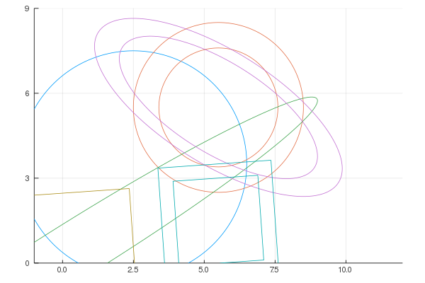
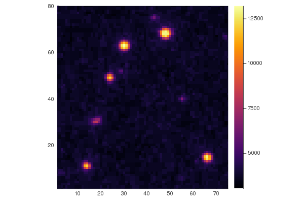
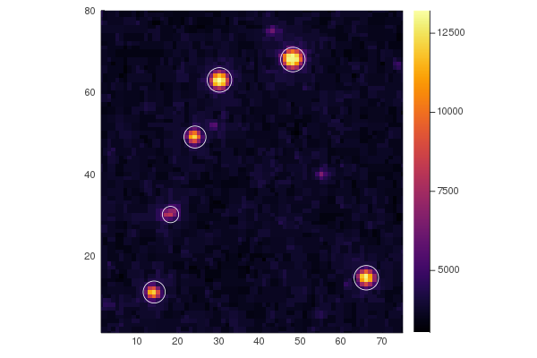

Examples
Plotting
We have recipes for all our aperture types, so you can easily create overlays on your images.
using Photometry
using Plots
plot(CircularAperture(2, 3, 4), c=1, xlims=(-1, 12), ylims=(0, 9))
plot!(CircularAnnulus(5, 5, 2.1, 3), c=2)
plot!(EllipticalAperture(0, 0, 10, 1, 32), c=3)
plot!(EllipticalAnnulus(5, 5, 4, 5, 2, -32), c=4)
plot!(RectangularAperture(0, 0, 4, 4, 4), c=5)
plot!(RectangularAnnulus(5, 1, 3, 4, 4, 4), c=6)
Simple Stars
Here is an example where we will find aperture fluxes for stars from M67. The dataset is provided as part of the astropy/photutils-datasets repository.
Let's start by downloading and showing our image
using Photometry
using Plots
using FITSIO
hdu = FITS(download("https://github.com/astropy/photutils-datasets/raw/master/data/M6707HH.fits"))
image = read(hdu[1])'
chunk = @view image[71:150, 81:155]
heatmap(chunk, aspect_ratio=1, c=:inferno,
xlims=(1, size(chunk, 2)), ylims=(1, size(chunk, 1)))
Now let's add some apertures!
positions = [
[47.5, 67.5],
[29.5, 62.5],
[23.5, 48.5],
[17.5, 29.5],
[13.5, 10.5],
[65.5, 14.0]
]
radii = [3, 3, 2.7, 2, 2.7, 3]
aps = CircularAperture.(positions, radii)6-element Array{CircularAperture{Float64},1}:
CircularAperture(47.5, 67.5, r=3.0)
CircularAperture(29.5, 62.5, r=3.0)
CircularAperture(23.5, 48.5, r=2.7)
CircularAperture(17.5, 29.5, r=2.0)
CircularAperture(13.5, 10.5, r=2.7)
CircularAperture(65.5, 14.0, r=3.0)now let's plot them up
heatmap(chunk, aspect_ratio=1, c=:inferno,
xlims=(1, size(chunk, 2)), ylims=(1, size(chunk, 1)))
plot!.(aps, c=:white)
and finally let's get our output table for the photometry
table = aperture_photometry(aps, chunk)6 rows × 4 columns
| xcenter | ycenter | aperture_sum | aperture_sum_err | |
|---|---|---|---|---|
| Float64 | Float64 | Float64 | Float64 | |
| 1 | 47.5 | 67.5 | 2.48267e5 | 0.0 |
| 2 | 29.5 | 62.5 | 2.25989e5 | 0.0 |
| 3 | 23.5 | 48.5 | 1.49979e5 | 0.0 |
| 4 | 17.5 | 29.5 | 72189.4 | 0.0 |
| 5 | 13.5 | 10.5 | 148774.0 | 0.0 |
| 6 | 65.5 | 14.0 | 2.02803e5 | 0.0 |